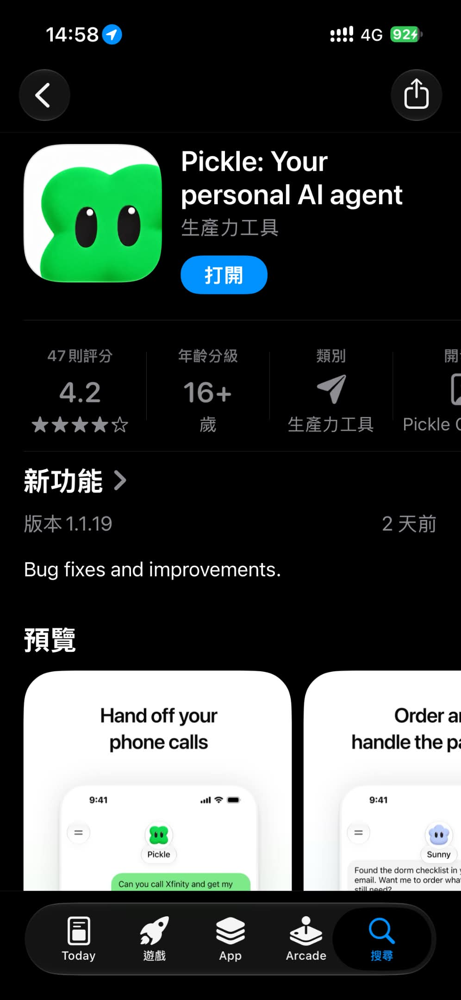

Threads｜Pickle AI 電話代理：邀請、功能與隱私界線
摘要與查核範圍
Threads 作者 @cup0319 分享 Pickle AI 代理電話、社群帳號操作及邀請體驗。以下區分作者當時個人觀察與產品官方公開資訊；查核日期 2026-11-11，未登入、安裝、申請邀請或撥打電話。
作者的體驗，不等同普遍規則
作者稱 Pickle 在韓國 App Store 生產力免費榜第 1、免費總榜第 2；當時需邀請、每天有免費額度，凌晨 4 點補滿，推薦雙方各獲一次重設券，最多邀請 20 人。這些排名、時間與邀請規則未獨立證實，時區亦未確認，可能隨地區、帳號或時間變動。
她表示曾讓代理使用系統電話線路致電朋友，朋友能接聽及交談，並稱撥接雙方免費；也稱曾讓它登入 X 小帳發文。她說自己未開任何權限、覺得反應比 Muse 快且對話自然；這些是個人敘述或主觀比較，不代表沒有任何資料存取或授權風險。她另稱只有 App、單一 Chat，自己使用韓國 VPN 和美國 App Store，並提醒勿用電話功能騷擾他人。上述免費、平台及 VPN 說法均不應當成現行保證或操作建議。
官方資料能確認什麼
Pickle, Inc. 官網與美國 App Store 介紹均描述可代撥電話、訂購與預訂等；商店說明稱相關行動須經使用者同意。官網目前也列有 Google Play，因此不能把作者「只有 App 版」推論為只有 iOS；官網存在亦不代表提供完整網頁版代理功能。作者提到的排行榜、邀請規則、通話雙方一律免費與 VPN 必要性，本次未找到足夠官方證據確認，使用前應查看最新地區限制、服務條款與電信費率。
隱私與安全
官網 FAQ 聲稱密碼和卡號在裝置加密，授權員工在服務維運、安全與法律等情況可查看對話與記憶，查看需驗證並留有紀錄；這是廠商聲明，非獨立安全稽核。連接 X、郵件或其他帳號前應檢視權限與資料政策，採最小權限並可撤銷，避免提供不必要資料。代撥前應取得對方同意，不應騷擾、冒用身分或洩露第三人電話；支付或預訂前確認內容與費用。
圖片與限制

逐張檢視原帖三張附圖：第一張顯示可識別的電話號碼，未公開轉載；第二張為私人通話對話內容，為降低隱私風險亦不轉載；第三張為 App Store 產品介面，未見電話號碼或邀請碼，作為辨識用截圖保留。圖片權利歸原權利人，轉載授權未確認。Threads 登入提示限制完整瀏覽，未能獨立驗證實際通話、費率、邀請與當前產品功能。
來源
- Threads 主文：https://www.threads.com/@cup0319/post/Dfl5HVuk5gU
- Threads 續文：https://www.threads.com/@cup0319/post/Dfl5GycE34k
- 官方首頁及 FAQ：https://pickle.com/
- 官方隱私政策：https://pickle.com/privacy-policy
- 美國 App Store：https://apps.apple.com/us/app/pickle-your-personal-ai-agent/id6795790129
- Google Play：https://play.google.com/store/apps/details?id=com.pickle.client